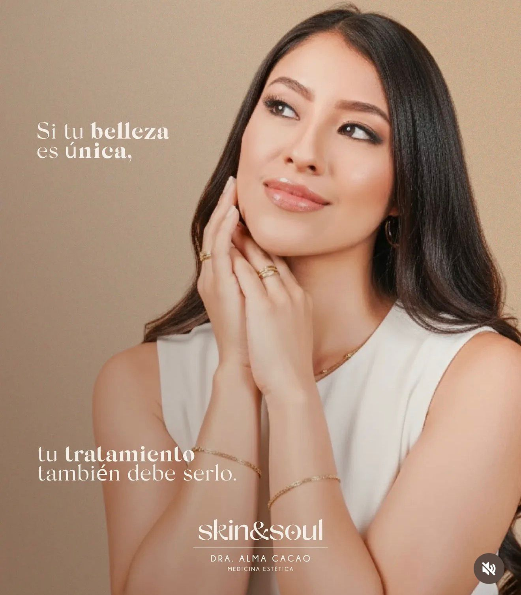

El arte de la
belleza eterna
En Skin & Soul cuidamos la piel y lo que hay detrás de ella. Diagnóstico médico, tratamientos con resultados naturales y una rutina de skincare que sí podés sostener.

Dra. Alma Cacao
Creé Skin & Soul con una idea simple: la piel es el resultado visible de lo que pasa por dentro. Por eso cada consulta empieza con un diagnóstico real, no con un catálogo de tratamientos. Trabajo para que cada procedimiento se vea como vos, no como una versión genérica de "piel perfecta".
Un plan de piel, no una receta genérica.
Cada tratamiento se ajusta según diagnóstico. Estos son los servicios que ofrecemos con mayor frecuencia en Skin & Soul.
Toxina botulínica (Botox)
Suaviza líneas de expresión en frente, entrecejo y contorno de ojos con dosis calculada según tu musculatura facial.
Rellenos con ácido hialurónico
Volumen y definición en labios, pómulos o surco nasogeniano, siempre buscando proporción.
Limpieza facial profunda
Extracción, exfoliación e hidratación para piel más despejada. Ideal como mantenimiento.
Peeling químico
Distintas concentraciones según tu tipo de piel, para manchas, textura y marcas de acné.
Mesoterapia facial
Vitaminas y ácido hialurónico en microdosis para una piel más luminosa y firme.
SkinCare personalizado
Evaluamos tu piel y armamos una rutina diaria realista, con productos que sí vas a usar.
Así se ve una primera consulta
Tres pasos, sin presión para llevarte un tratamiento que no necesitás.
Diagnóstico de piel
Revisamos tu piel, historial y objetivos antes de sugerir nada.
Propuesta personalizada
Opciones, tiempos y costos reales antes de agendar cualquier procedimiento.
Control de resultados
Acompañamos la evolución y ajustamos la rutina en casa si hace falta.
Productos para continuar el tratamiento en casa
Seleccionados y recomendados en consulta según tu tipo de piel.
Limpiador facial suave
Q 145.00Sérum antioxidante
Q 280.00Protector solar facial
Q 195.00Crema hidratante calmante
Q 210.00Lo que dicen quienes ya vinieron a consulta
"Me explicó todo antes de aplicar nada. Primera vez que siento que una consulta estética también es médica."
— Paciente, limpieza facial"El resultado del botox se ve natural, nadie notó que me hice algo, solo que me veía descansada."
— Paciente, toxina botulínica"Me armó una rutina con tres productos, no veinte. Por fin la sigo todos los días."
— Paciente, skincare personalizadoAgendemos tu consulta
- Dirección8va avenida 1-11 zona 2, Condado Minerva, Cobán, Alta Verapaz
- Teléfono+502 5702 5386
- Correocontacto@skinandsoul.gt
- RedesFacebook: Dra. Alma Cacao · Instagram: @dra.almacacao
- HorarioLunes a viernes, 9:00–18:00 · Sábado 9:00–13:00